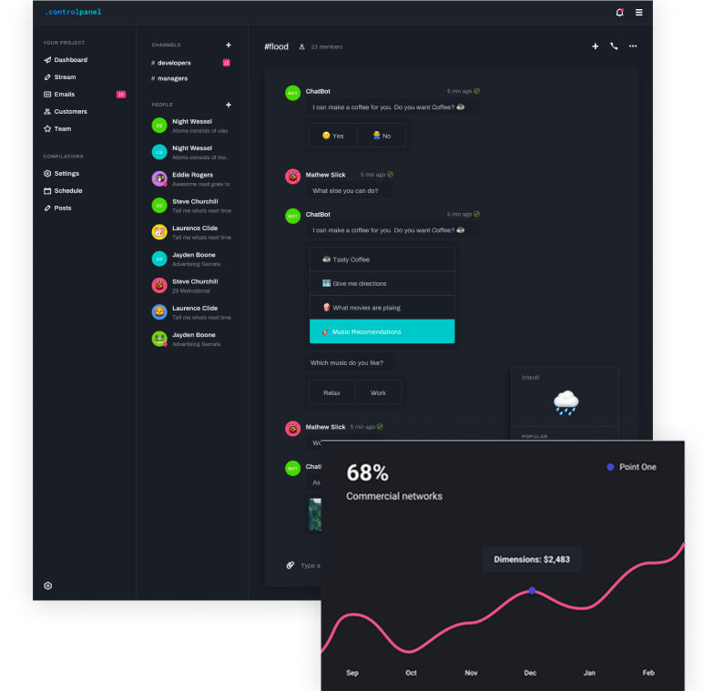

FEATURES
Most calendars are designed for teams. Slate is designed for freelancers who want a simple way to plan their schedule.

-
A single source of truthWhen you add work to your Slate calendar we automatically calculate useful insights
-
 Intuitive interfaceWhen you add work to your Slate calendar we automatically calculate useful insights
Intuitive interfaceWhen you add work to your Slate calendar we automatically calculate useful insights -
 Or with rulesWhen you add work to your Slate calendar we automatically calculate useful insights
Or with rulesWhen you add work to your Slate calendar we automatically calculate useful insights